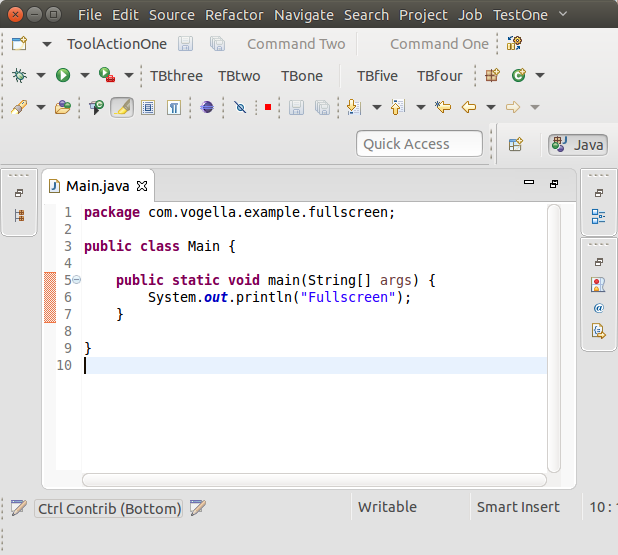
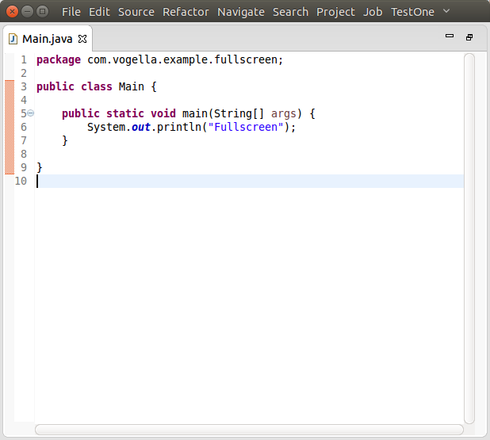
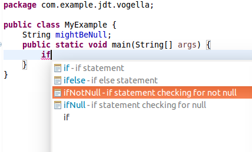
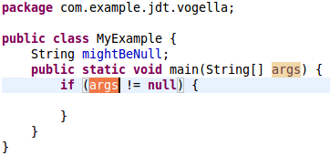

Instructions
Make the entry self-contained and mention API classes. Do not link to bugs and don't promote individuals or third-party products.
Use active voice (say "you", not "the user"), and follow other advice in the Topic Content section of the Eclipse Doc Style Guidelines.
Stick to the default font and size. Make command names (Quick Fix), keyboard shortcuts (Ctrl+1), and preference page paths (Preferences > General > Keys) bold.
Do not enclose the first paragraph of an item in <p></p> tags.
The Windows Snipping Tool actually saves to PNG on Windows 7 and can easily be used to crop and save screenshots:
- Arrange the windows for the shot
- Use the Windows Snipping Tool to capture part of the screen
- Use File > Save As to save the screenshot as a PNG
- Overlays such as red circles or boxes to call out details can be done using Microsoft Paint
Name the file is a way that is appropriate and specific to the item (e.g., key-bindings.png, rather than something generic like image.png). Use all lowercase letters in the image file name, including the ".png" file extension. As a separator, use hyphen "-" rather than underscore "_".
Put all the images in a sibling directory named "images".
This gives XHTML like:
<img src="images/foo-view.png" alt=""/>
Include a suitable alt attribute.
The alt text should be empty ("") if the image just illustrates the text.
Only use the alt text to add information that is not accessible if the page is rendered without images.
Don't write alt="Screenshot of the XY dialog". Blind users shouldn't have to skip useless repetitions.
If the alt attribute text cannot sufficiently replace the image contents
(e.g. for a screenshot that shows source code), then enclose the img element in a link
to a plain ".txt" file with the same name as the image:
<a href="images/foo-view.txt"><img ...
The images should be left-justified (as opposed to centered). Do not embed the width and height of the image.
Example: (scaled -- it's too big!)

The following is a screenshot of the IDE with a maximized Java editor and several toolbars visible.

The next screenshot shows the same maximized editor but with hidden toolbar.

The recent directory list was also increased to 10. It used to be 5, users can still adjust this value via the preferences.
The reworked dialog looks like this:

Padding: by default, SWT menus now look similar to those in OSX: text is not strictly aligned. This is due to a new way in which menus are constructed in GTK3 (see https://wiki.gnome.org/HowDoI/GMenu#Icons for more details). In order to align all text entries in a menu, simply launch the SWT application with the environment variable SWT_PADDED_MENU_ITEMS=1.
Checkboxes and images: on GTK2.x, a menu entry was limited to either a checkbox or an image. With this change, GTK3 SWT now supports menu entries that contain both an image and a checkbox.
The image below shows a screenshot of the default GTK3 menu on the left, compared to an aligned GTK3 menu on the right.





// Old way
IResource selectedResource;
if (selection instanceof IAdaptable) {
selectedResource = ((IAdaptable)selection).getAdapter(IResource.class);
}
// New way
IResource selectedResource = Adapters.adapt(selection, IResource.class);
// Old way
void myMethod(IProgressMonitor monitor) {
SubMonitor subMonitor = SubMonitor.convert(monitor, 2);
if (subMonitor.isCanceled()) {
throw new OperationCanceledException();
}
childMethod1(subMonitor.newChild(1));
if (subMonitor.isCanceled()) {
throw new OperationCanceledException();
}
childMethod2(subMonitor.newChild(1));
}
// New way
void myMethod(IProgressMonitor monitor) {
SubMonitor subMonitor = SubMonitor.convert(monitor, 2);
childMethod1(subMonitor.split(1));
childMethod2(subMonitor.split(1));
}
// Old way
void myMethod(IProgressMonitor monitor) {
SubMonitor subMonitor = SubMonitor.convert(monitor, 2);
uncancellableMethod(null);
subMonitor.worked(1)
cancellableMethod(subMonitor.newChild(1));
}
// New way
void myMethod(IProgressMonitor monitor) {
SubMonitor subMonitor = SubMonitor.convert(monitor, 2);
uncancellableMethod(subMonitor.newChild(1, SubMonitor.SUPPRESS_ISCANCELED | SubMonitor.SUPPRESS_BEGINTASK);
cancellableMethod(subMonitor.newChild(1));
}